カレンダープラスα の紹介ページへ戻る ・ DNGG-studio のアプリ一覧
カレンダープラスα の使い方
カレンダープラスα（カレンダープラスアルファ）は、あなたの Google カレンダーの予定をそのまま表示・編集し、画像・ファイルの添付や天気など「Google カレンダーのアプリにない機能」を足すアプリです。予定はすべてあなたの Google カレンダーに保存されるので、パソコンやほかのアプリからも同じ予定が見えます。
画像の1 のような赤い番号は、押すところと、説明の番号です。
この説明は バージョン 0.1.2 の画面に合わせています（2026年11月22日）。画面はこれから変わることがあります。画像の予定はすべて見本です。
はじめに：Google アカウントでつなぐ 画面の見方と切り替え 予定を作る・直す・消す 繰り返しの予定 予定を長押しで動かす 説明欄に画像を入れる ファイルを添付する（ほかのアプリの「共有」からも） 場所と「ここに行く」 色分けに名前を付ける・絞り込む 天気を出す（日本国内） ウィジェットを置く メニューと設定 よくある質問
1. はじめに：Google アカウントでつなぐ
はじめて開くと、試しの予定が出ています。あなたの予定を出すには、Google アカウントでつなぎます。
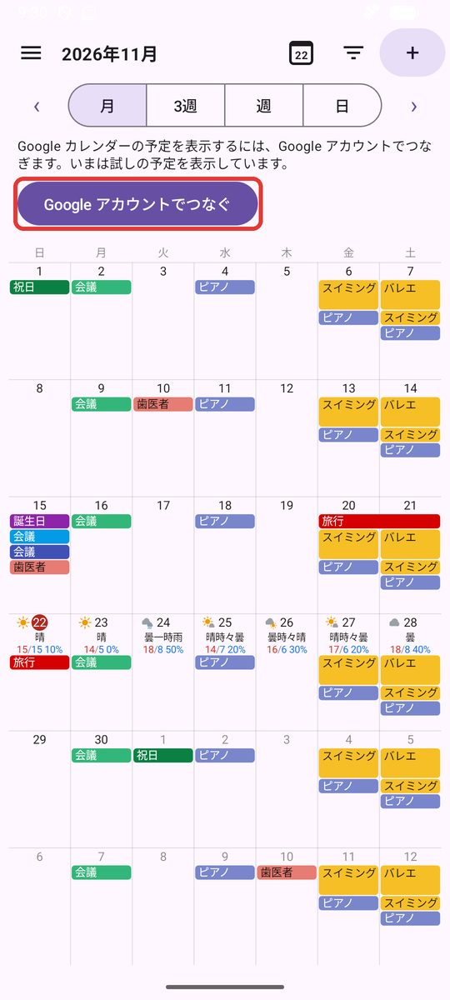
上の「Google アカウントでつなぐ」を押します 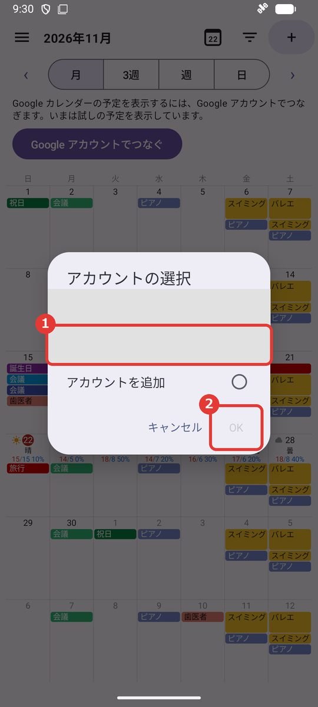
1 使う Google アカウントを選び、2 「OK」を押します（画像ではメールアドレスを隠しています）
上の「Google アカウントでつなぐ」を押します
端末にログインしている Google アカウントを選んで「OK」を押します
カレンダーとドライブの許可を求める画面が出るので、内容を確かめて「続行」「許可」を押します
「Google はこのアプリを確認していません」と出たとき： Google の確認がまだ終わっていないために出る画面です。左下の「詳細」を押し、下に出る「カレンダープラスアルファ（安全ではないページ）に移動」を押すと先へ進めます。確認が終わると、この画面は出なくなります。
アプリが使うのは、あなたのカレンダーの予定と、このアプリが Google ドライブに保存したファイルだけです。ドライブのほかのファイルは見ません
メニューの「アカウントを追加」で、いくつかの Google アカウントをつなげます。予定はまとめて表示されます
許可が切れたときは、メニューに「もう一度つなぐ」が出ます。押すと許可し直せます
2. 画面の見方と切り替え
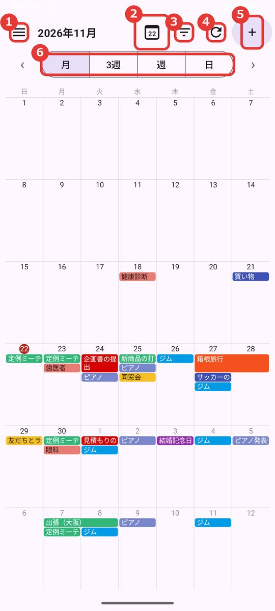
1 メニュー 2 今日に戻る 3 色で絞り込み 4 今すぐ更新 5 予定を作る 6 月・3週・週・日の切り替え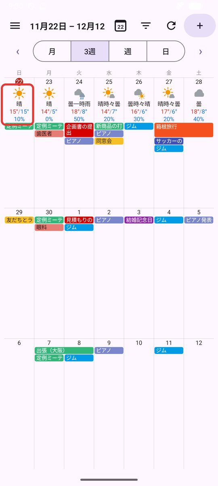
3週の表示。今週から 3 週分を大きなマスで見られます。天気を出す設定にすると、日付の下に天気が出ます 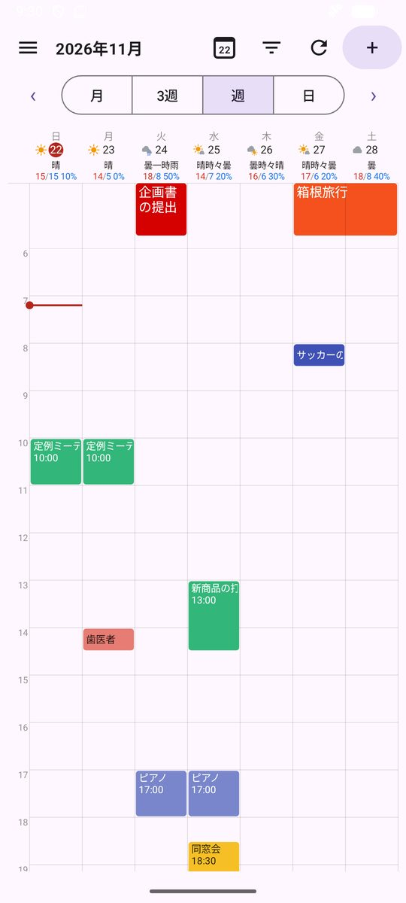
週の表示。時刻の目盛りを上下にスクロールして 1 日ぜんぶを見られます
左右にスワイプするか「‹」「›」で、前後の月・週・日に動きます
月の表示で日付を押すと、その日の表示になります
4 を押すと、すぐに Google カレンダーから読み込み直します。ふだんは開いたときと、裏で約 15 分ごとに読み込みます
3. 予定を作る・直す・消す
作る
右上の「＋」を押します。週・日の表示では、空いている時刻を押してもその時刻から作れます。
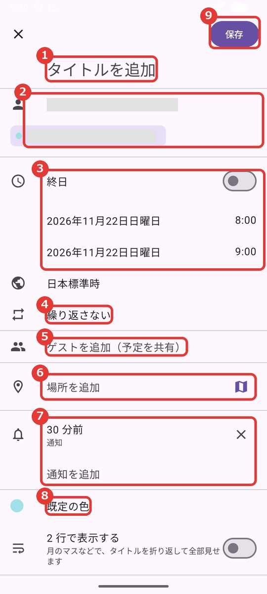
1 タイトル 2 入れるアカウントとカレンダー 3 終日・開始・終了 4 繰り返し 5 ゲスト 6 場所 7 通知 8 色 9 保存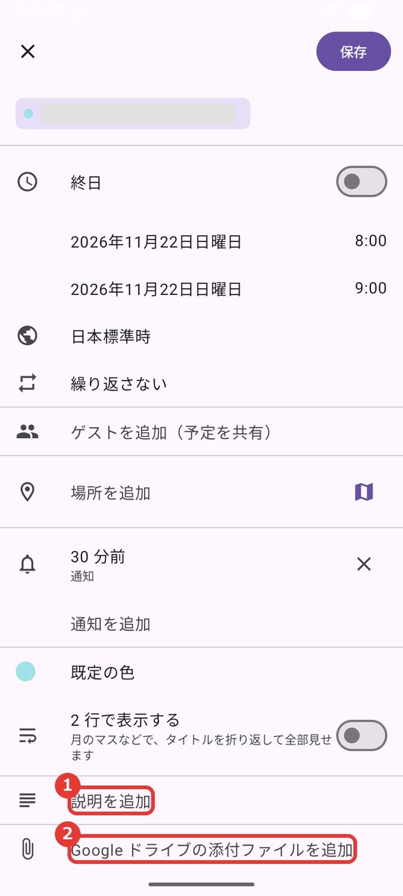
下へ送ると、1 説明（画像も入れられます）と2 ファイルの添付があります
9 「保存」を押すと、すぐに Google カレンダーに保存されますゲストにメールアドレスを足すと、保存したときに Google から案内のメールが届きます
「2 行で表示する」をオンにすると、長いタイトルを月のマスで 2 行に折り返して全部見せます
通知とウィジェットの「やること」
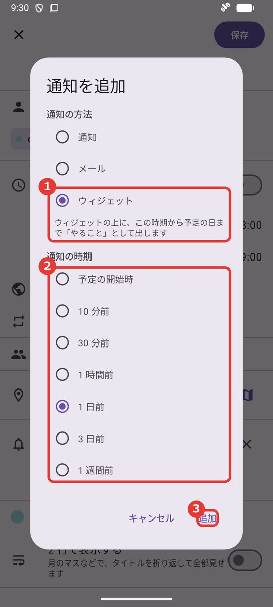
「通知を追加」で1 方法（通知・メール・ウィジェット）と2 時期を選び、3 「追加」
方法を「ウィジェット」にすると、その時期から予定の日まで、ホーム画面のウィジェットの上に「やること」として出ます（11. ウィジェット ）。粗大ごみの日のような、忘れたくない予定に便利です。
直す・消す
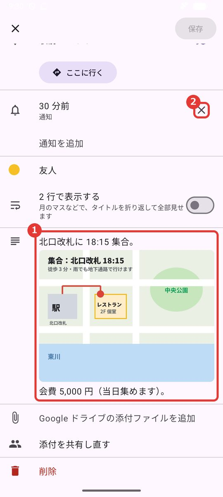
予定を押すと開きます。1 説明を押すと編集でき、2 「削除」で消せます。何も変えていないときは「保存」は灰色です
祝日など書き込めないカレンダーの予定は、見るだけです
4. 繰り返しの予定
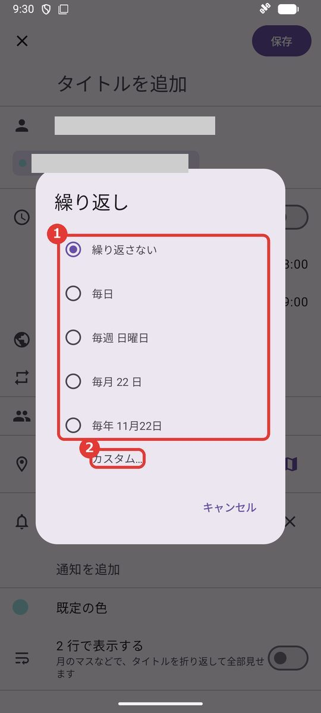
入力画面の「繰り返さない」を押すと出ます。1 から選ぶか、2 「カスタム…」 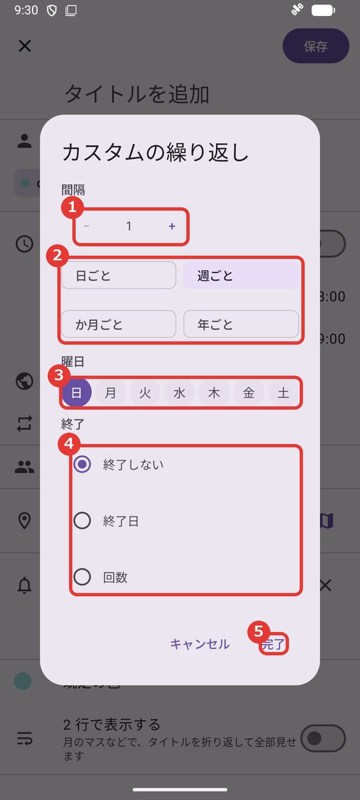
1 間隔 2 単位 3 曜日（いくつでも）4 終わり（なし・終了日・回数）を決めて5 「完了」
繰り返しの予定を直したり消したりするときは、「この予定」「これ以降のすべての予定」「すべての予定」から選ぶ画面が出ます（日付を変えたときは「すべての予定」は出ません）。
5. 予定を長押しで動かす
週・日の表示では、予定を長押しして、時刻や日を変えられます。
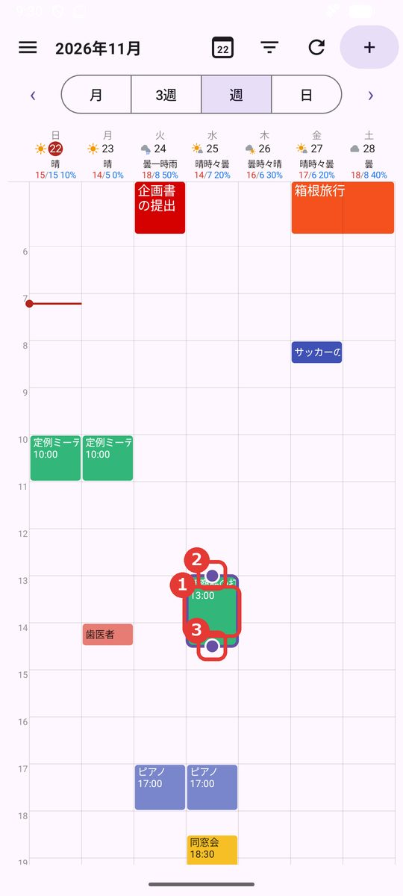
予定を長押しすると、太い枠とつまみが出ます。1 予定をなぞると予定ごと動き、2 上のつまみで開始、3 下のつまみで終了を変えます 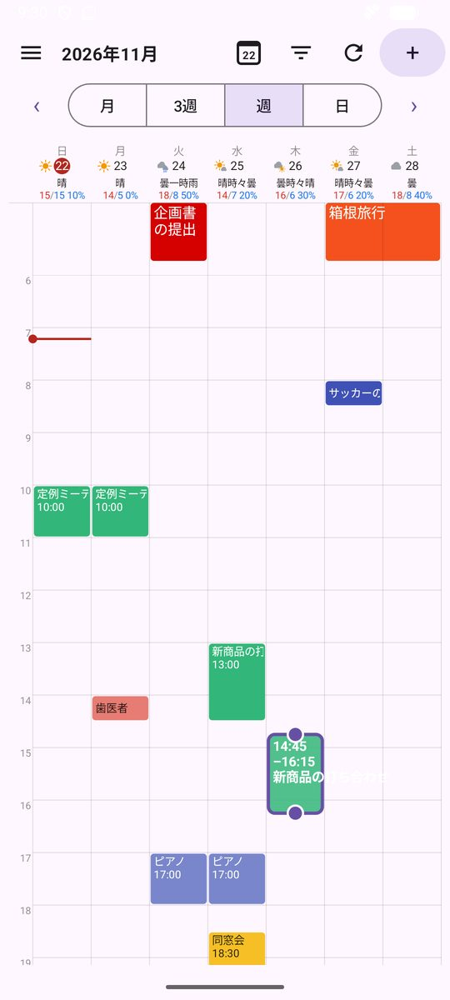
動かしている間は、行き先に「14:45–16:15」のように時刻が出ます。左右の列へなぞると別の日へ動きます
指を離すとすぐに保存します。時刻は 15 分ごとにそろいます
選んでいる予定を動かさずに押すと、予定が開きます。ほかのところを押すと、選ぶのをやめます
終日の予定・何日にもまたがる予定は、長押しで動かせません（押すと予定が開きます）
繰り返しの予定は、離したあとに「この予定・これ以降・すべて」を選びます
6. 説明欄に画像を入れる
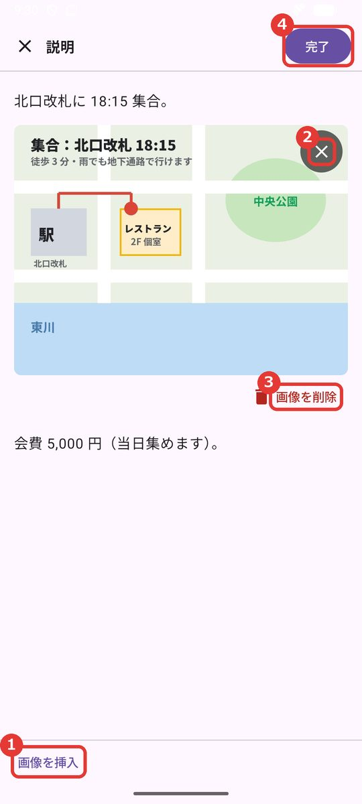
説明欄を押すと、この画面になります。1 「画像を挿入」で写真を入れ、2 ×か3 「画像を削除」で外し、4 「完了」
予定の入力画面で説明欄を押します
文字を書き、カーソルを置いたところに「画像を挿入」で写真やスクリーンショットを入れます
「完了」を押し、予定を保存すると、画像はあなたの Google ドライブの「カレンダープラス」フォルダに保存されます
説明欄の URL は押すと開けます
Google カレンダーのアプリやパソコンでは、画像の行はリンクとして見えます（押すと画像が開きます）
7. ファイルを添付する
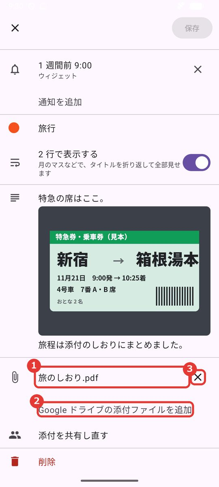
1 添付したファイル（押すと開きます）2 「Google ドライブの添付ファイルを追加」で足す 3 ×で外す
入力画面の説明の下の「Google ドライブの添付ファイルを追加」を押し、PDF や写真などを選びます
保存すると、ファイルが Google ドライブにアップロードされ、予定の添付欄に入ります。保存中は進み具合が出ます
1 つの予定に 25 件まで添付できます
ドライブでは「日付_カレンダー名_もとの名前」の名前に整えて保存します。予定の日付を変えると名前も変わります
予定から外したファイルや、予定ごと消したファイルは、ドライブのゴミ箱へ移ります（30 日以内なら戻せます）
画像と添付ファイルは、カレンダーを共有しているメンバーのアプリでも見られるように、「リンクを知っている全員」が見られる設定で保存します。リンクが書かれた予定を見られるのはカレンダーの共有メンバーとゲストだけですが、リンクが転送されると誰でも見られます。人に見せたくないファイルは添付しないでください。
ほかのアプリの「共有」から添付する
ダウンロードしたファイルやほかのアプリのファイルを、ファイルを探しにいかずに予定へ添付できます（バージョン 0.1.2 で追加）。
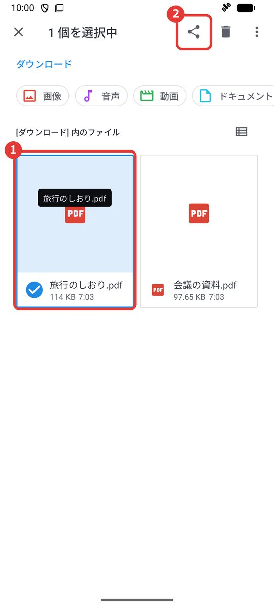
1 ファイルを長押しして選ぶ（いくつでも） 2 共有のボタンを押す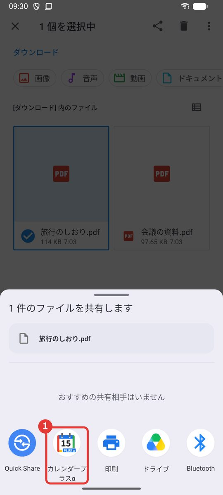
1 共有先の一覧で「カレンダープラスα」を押す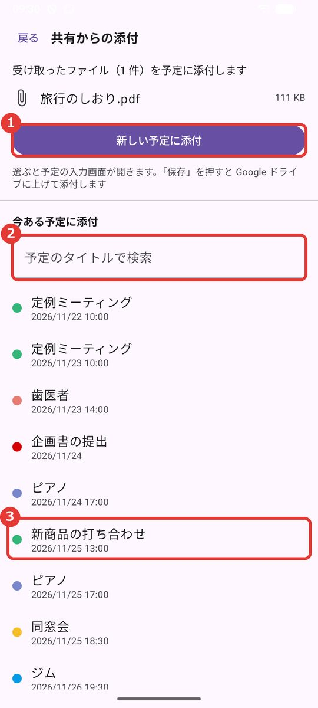
「共有からの添付」の画面 1 新しい予定に添付 2 予定のタイトルで探す 3 今ある予定を押して添付 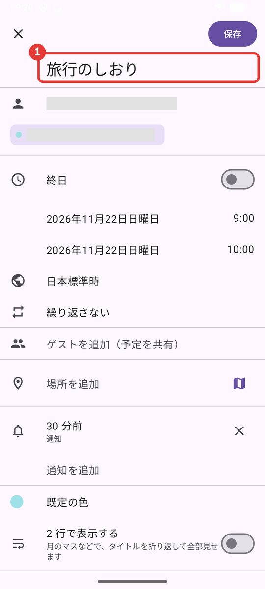
新しい予定に添付したとき 1 タイトルにはファイル名が入ります（直せます） 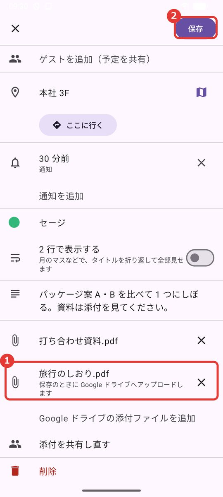
今ある予定に添付したとき 1 受け取ったファイル（保存のときにアップロード） 2 保存を押すと添付されます
ファイル管理のアプリなどでファイルを選び、「共有」を押します
共有先の一覧から「カレンダープラスα」を選びます
「共有からの添付」の画面で、添付先を選びます
新しい予定に添付： ファイルを添付した新しい予定の入力画面が開きます。タイトルにはファイル名（拡張子を除く）が入ります今ある予定に添付： 今日以降の予定が近い順に並びます。上の欄にタイトルの一部を入れると絞り込めます。押すとその予定の入力画面が開きます
入力画面で「保存」を押すと、ファイルが Google ドライブにアップロードされ、予定の添付欄に入ります。保存せずに閉じると添付しません
いくつかのファイルをまとめて共有すると、すべて同じ予定に添付します。1 つの予定の添付は 25 件までで、超える分は添付しません
出てくるのは、書き込めるカレンダーの予定だけです（祝日のカレンダーなどは出ません）
Google アカウントでつないでいないときは、画面の「Google アカウントでつなぐ」を押してからお使いください
共有の一覧に「カレンダープラスα」が出ないときは、一覧の右にスクロールするか、「その他」から探してください
8. 場所と「ここに行く」
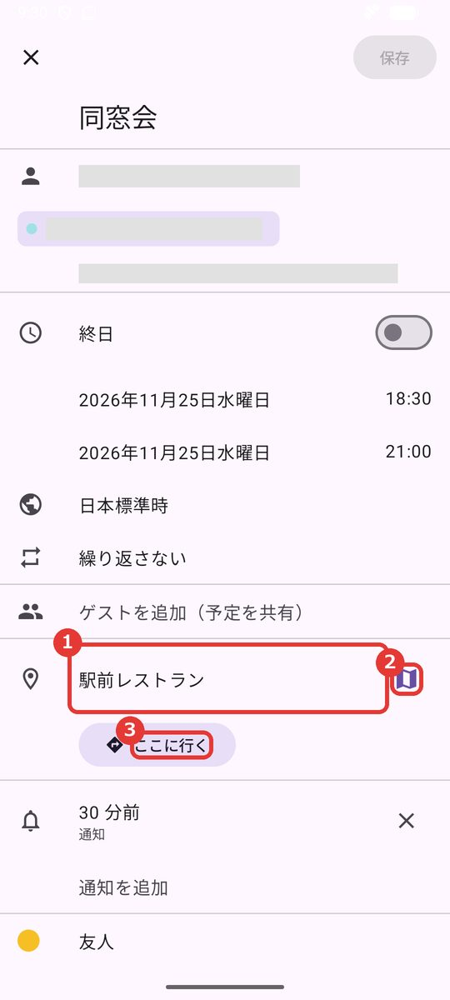
1 場所の欄 2 Google マップで探す 3 「ここに行く」で道案内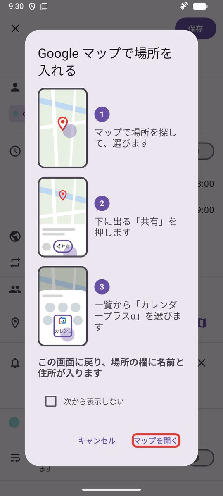
2 を押すと手順の案内が出ます。「マップを開く」で Google マップが開きます
場所の欄には、店名や住所をそのまま入れます
Google マップで場所を探して「共有」→「カレンダープラスα」を選ぶと、名前と住所が入ります
場所が入っている予定には「ここに行く」が出ます。押すと、Google マップで今いる所からの道案内が始まります
9. 色分けに名前を付ける・絞り込む
色分けの名前
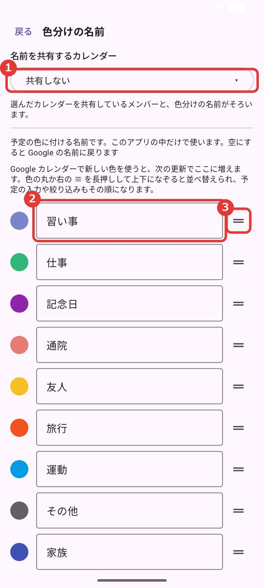
1 名前を共有するカレンダー 2 色の名前（空にすると Google の名前） 3 長押しして上下になぞると並べ替え
メニューの「色分けの名前」で、Google カレンダーの色に「仕事」「家族」などの名前を付けます
1 で共有カレンダーを選ぶと、そのカレンダーのメンバーと名前をそろえられます名前はこのアプリの中だけのものです。Google カレンダーのアプリの色の名前は変わりません
絞り込み
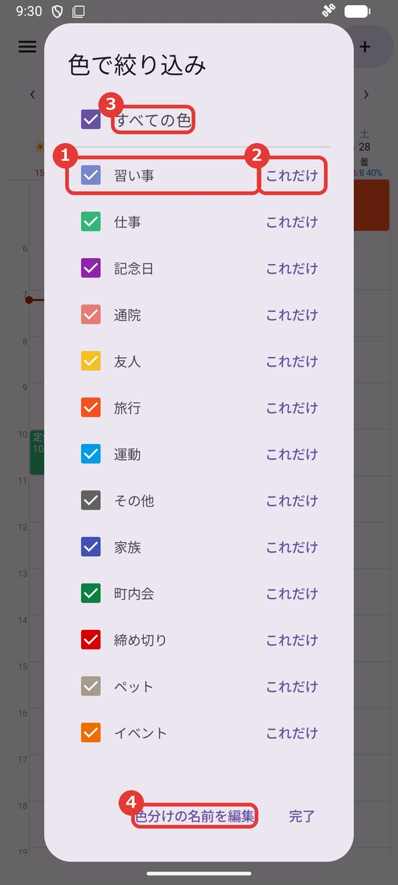
1 チェックで表示・非表示 2 「これだけ」でその色だけ 3 すべての色 4 名前を直す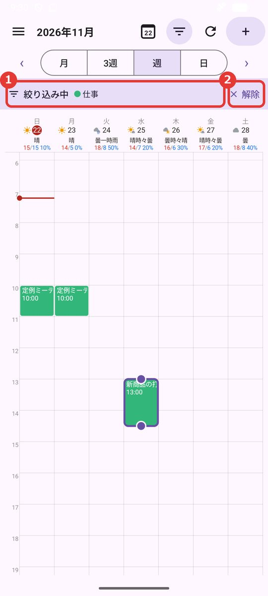
絞り込み中は1 の帯が出ます。2 「解除」で全部の色に戻ります
10. 天気を出す（日本国内）
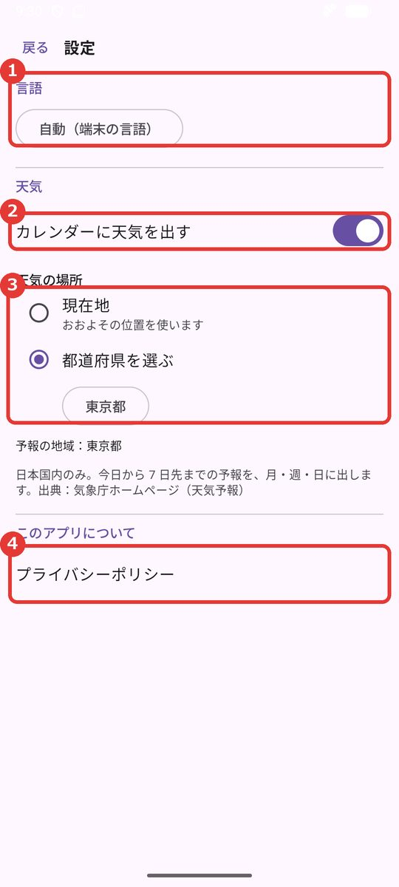
メニューの「設定」で、2 「カレンダーに天気を出す」をオンにし、3 場所を選びます 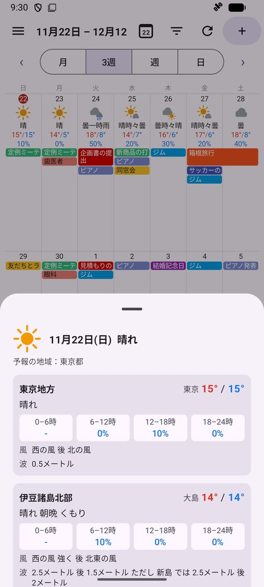
カレンダーの天気を押すと、地域ごとの気温・6 時間ごとの降水確率・風が見られます
場所は「現在地」か「都道府県を選ぶ」。現在地のときは、おおよその位置の許可を求めます（位置は端末の中で地域を選ぶのに使うだけで、外へは送りません）
気象庁の天気予報（7 日先まで）が、日付の横や下に出ます。詳しい予報は左右に動かすと前後の日に変わります
予報は気象庁の発表（5 時・11 時・17 時）のあとに自動で読み込み直します。日本の外では出ません
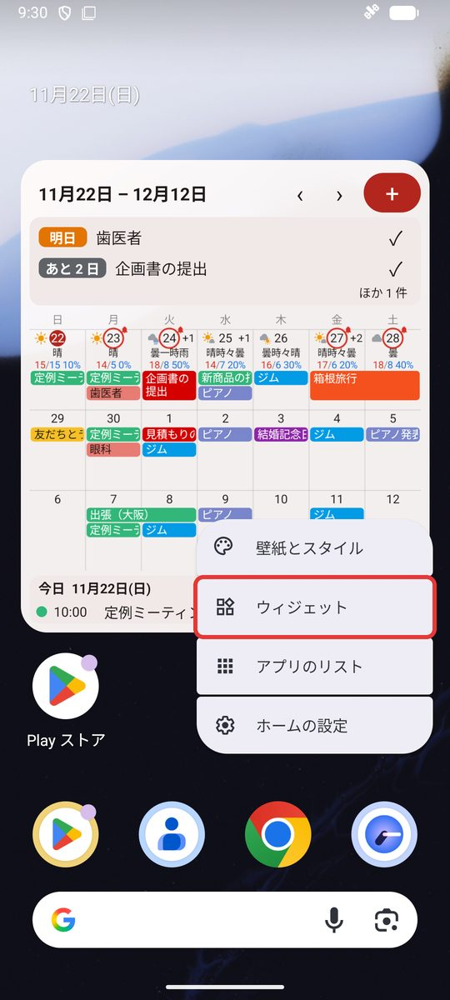
ホーム画面の空いているところを長押しし、「ウィジェット」を押します 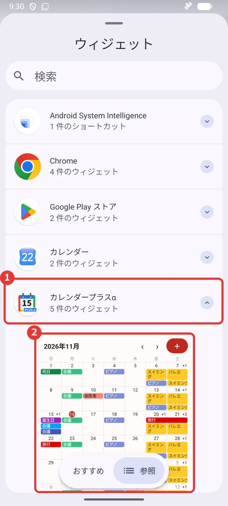
1 「カレンダープラスα」を押して開き、2 置きたい種類を長押ししてホーム画面へ運びます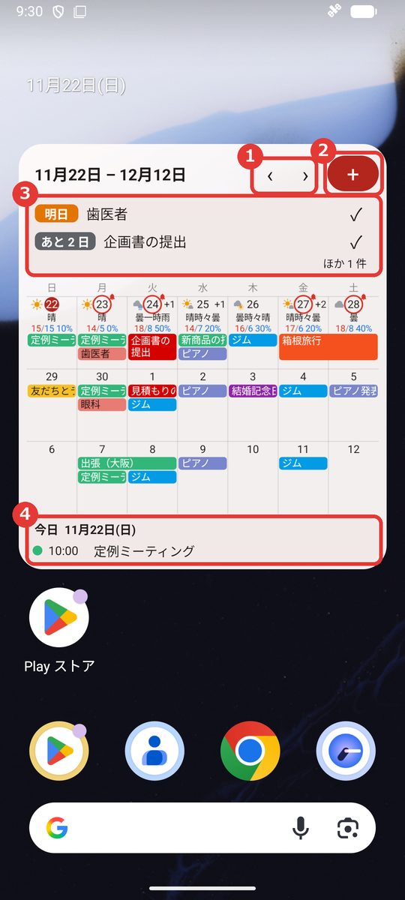
1 前後に動く 2 予定を作る 3 やること（✓で済み） 4 今日の予定
種類は、月・週・日・3週間＋今日・予定リストの 5 つです
置いたときに出る設定で、表示するカレンダー・背景・週の始まりなどを選びます。あとから、ウィジェットの長押しで変えられます
見出しを押すと今日に戻ります。大きさは自由に変えられ、小さいときは天気はアイコンだけになります
「やること」には、通知の方法を「ウィジェット」にした予定が出ます（3. 通知 ）
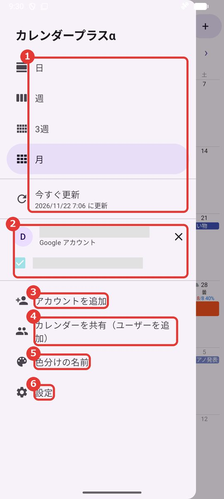
1 表示の種類と今すぐ更新 2 アカウントとカレンダー（チェックで出す・出さない、×で外す） 3 アカウントを追加 4 カレンダーを共有 5 色分けの名前 6 設定1 言語（自動か 12 言語） 2 3 天気 4 プライバシーポリシー
カレンダーのチェックを外すと、そのカレンダーの予定をこのアプリとウィジェットに出しません（Google カレンダーの設定は変わりません）
アカウントを外しても、Google カレンダーの予定は消えません
「カレンダーを共有」では、自分のカレンダーを、メールアドレスと権限を選んでほかの人と共有できます。やめるのは×です
13. よくある質問
予定はどこに保存されますか？
あなたの Google カレンダーです。添付ファイルと画像はあなたの Google ドライブの「カレンダープラス」フォルダです。運営者のサーバーには何も送りません。アプリを消しても、予定とファイルは残ります。
Google カレンダーのアプリで作った予定も直せますか？
はい。Google カレンダーにある予定は、どのアプリで作ったものでも表示・編集できます。
パソコンで直した予定がすぐに出ません
上の更新のボタンを押すと、すぐに読み込み直します。裏では約 15 分ごとに読み込みます。
ウィジェットの表示が古いままです
ウィジェットは予定を読み込んだときと約 30 分ごとに描き直します。急ぐときはアプリを開くか、更新のボタンを押してください。
アプリのアクセスをやめたい
メニューの×でアカウントを外したうえで、Google アカウントの「サードパーティ製のアプリとサービス」 からカレンダープラスアルファのアクセスを削除してください。
データの扱いを詳しく知りたい
プライバシーポリシー をご覧ください。
お問い合わせ
DNGG-studio：dngg.studio@gmail.com
本アプリは Google の公式アプリではありません。Google カレンダー、Google ドライブ、Google マップは Google LLC の商標です。天気予報の出典：気象庁ホームページ。
紹介ページへ戻る